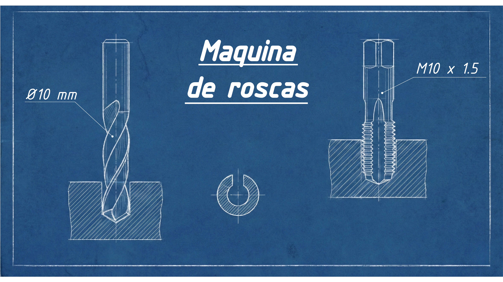

Guía Rápida: Qué broca usar para cada rosca (Métrica y Gas)
Publicado el 22 Enero, 2026 • 2 min de lectura

No hay nada peor que romper un macho de roscar dentro de una pieza casi terminada o dejar una rosca con poca "chicha" que se pasa de vuelta al apretar.
📏 La Regla de Oro
Recuerda esta sencilla fórmula para roscas Métricas estándar:
Ø Broca = Ø Nominal - Paso
Ejemplo M6 (Paso 1mm): 6mm - 1mm = Broca de 5mm.
1. Tabla de Roscas Métricas (ISO)
| Rosca (M) | Paso (mm) | Broca (mm) |
|---|---|---|
| M3 | 0.5 | 2.50 |
| M4 | 0.7 | 3.30 |
| M5 | 0.8 | 4.20 |
| M6 | 1.0 | 5.00 |
| M8 | 1.25 | 6.80 |
| M10 | 1.5 | 8.50 |
| M12 | 1.75 | 10.20 |
2. Tabla de Roscas Gas (BSP / G)
| Rosca (G) | Hilos/Pulgada | Broca (mm) |
|---|---|---|
| G 1/8" | 28 | 8.80 |
| G 1/4" | 19 | 11.80 |
| G 3/8" | 19 | 15.25 |
| G 1/2" | 14 | 19.00 |
💡 Consejos de experto
Para un acabado profesional:
- Avellana: Facilita la entrada del macho y evita rebabas.
- Lubrica: Aceite para acero, alcohol para aluminio.
¿Necesitas piezas mecanizadas de precisión?
Diseñamos y fabricamos soluciones listas para montaje.
Pedir Presupuesto